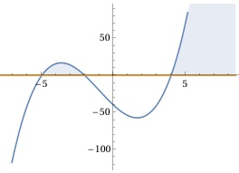

Aufgabe 58 Bestimmen Sie die Lösungsmenge der Ungleichung für x ∈ ℝ: (x + 2)(x - 4)(x + 5) ≥ 0 3 Lösungsmöglichkeiten: 1. x + 2 ≥ 0 (x - 4)(x + 5) ≥ 0 und umgekehrt 2. x - 4 ≥ 0 (x + 2)(x + 5) ≥ 0 und umgekehrt 3. x + 5 ≥ 0 (x + 2)(x - 4) ≥ 0 und umgekehrt 2. Möglichkeit gewählt. 1. x - 4 ≥ 0 --> x ≥ 4 (x + 2)(x + 5) ≥ 0, ist dann der Fall, wenn x + 2 ≥ 0 --> x ≥ -2 x + 5 ≥ 0 --> x ≥ -5 (x + 2)(x + 5) ≥ 0 trifft zu für x ≥ -2 ∩ x ≥ -5 = x ≥ -2 oder wenn x + 2 ≤ 0 --> x ≤ -2 x + 5 ≤ ß --> x ≤ -5 (x + 2)(x + 5) ≥ 0 trifft zu für x ≤ -2 ∩ x ≤ -5 = x ≤ -5 und insgesamt für 1. zu x ≥ -2 ∪ x ≤ -5 (x + 2)(x - 4)(x + 5) ≥ 0 trifft zu für x ≥ 4 ∩ x ≥ -2 ∪ x ≤ -5 L1 = x ≥ 4 oder 2. x - 4 ≤ 0 --> x ≤ 4 = D5 (x + 2)(x + 5) ≤ 0, ist dann der Fall, wenn x + 2 ≥ 0 --> x ≥ -2 x + 5 ≤ 0 --> x ≤ -5 (x + 2)(x + 5) ≤ 0 trifft zu für x ≥ -2 ∩ x ≤ -5 = ∅ oder wenn x + 2 ≤ 0 --> x ≤ -2 x + 5 ≥ 0 --> x ≥ -5 (x + 2)(x + 5) ≤ 0 trifft zu für x ≤ -2 ∩ x ≥ -5 = -5 ≤ x ≤ -2 und insgesamt für 2. ∅ ∪ -5 ≤ x ≤ -2 = -5 ≤ x ≤ -2 (x + 2)(x - 4)(x + 5) ≥ 0 trifft zu für x ≤ 4 ∩ -5 ≤ x ≤ -2 L2 = -5 ≤ x ≤ -2 L = L1 ∪ L2 L = x ≥ 4 ∪ -5 ≤ x ≤ -2 Alternativlösung: Nullstellen von (x + 2)(x - 4)(x + 5) = 0 x + 2 = 0|-2 x1 = -2 x - 4 = 0 |+4 x2 = 4 x + 5 = 0|-5 x3 = -5 Die Funktionswerte zwischen -5 und -2 und ab x = 4 liegen oberhalb der x-Achse, erfüllen also die Bedingung (x + 2)(x - 4)(x + 5) > 0, die Nullstellen erfüllen die Bedingung = 0. L = - 5 ≤ x ≤ -2 ∪ x ≥ 4
